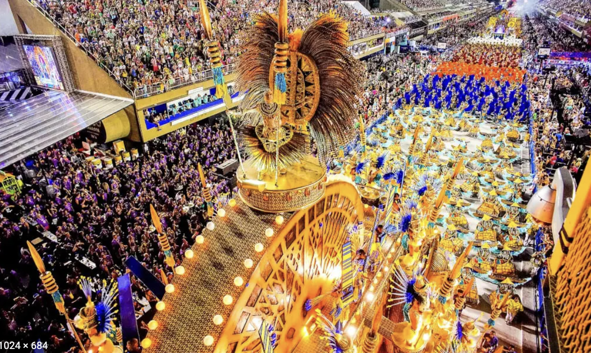
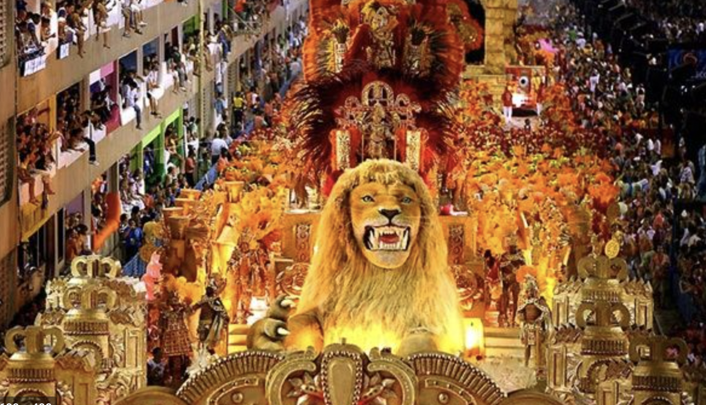

div{
background-color:red;
}
div
Steven🐺🐺🐺, Alex 🦁🦁🦁,Edwin🐻❄️🐻❄️🐻❄️
Brazil Celebrations
V isitors to this diverse and fascinating country can expect flamboyant outfits bedecked with glitter and sequins, extravagant make up and endless parades of beautifully crafted floats. With carnivals taking place all over the country it can be difficult to choose where to go, so here we have created a quick guide to five of the best.

In Brazil they are many different type of Carnaval each have different meaning and culture for them and their belief. We can say is very fun their Carnavals and very coluful the most famous and Carnal is RIO Carn
Carnival is celebrated throughout Brazil, and each city observes it in its own unique way. This celebration takes place 46 days before Easter and, although celebrated mostly by Roman Catholics (as well as some other Christian denominations), it is believed to have pagan roots, as do many of the modern Christian celebrations (e.g. Christmas). This celebration technically and traditionally signifies the giving up of meat for Lent. Today, Carnival is characterised by brightly-coloured costumes, opulent decorations and jolly music. Dance and music parades fill the streets as the audience looks on and joins in the festivities. These celebrations carry on, day and night, for days on end (sometimes exceeding a week). Coastal cities tend to have more theatrical celebrations than those further inland.

In the late 18th century, the "cordões" (literally "cords", laces or strings in Portuguese) combined with the "dança do coco" (literally "coconut dance" an Afro-Brazilian dance troupe form) were introduced in Rio de Janeiro. These were pageant groups that paraded through city avenues performing on instruments and dancing. Today they are known as Carnaval blocos (blocks), consisting of a group of people who dress in costumes or special T-shirts with themes and/or logos. Blocos are generally associated with particular neighbourhoods; they include both a percussion or music group and an entourage of revelers. They eventually became the "fathers" of what everyone today knows as the famous and internationally renowned samba-schools in Brazil. Samba-schools (not only in Rio de Janeiro, but in São Paulo and several other cities) are the cultural epicenter of the Brazilian carnival, in terms of the "parading style". The first registered samba-school was called "Deixa-falar", but disappeared later and the first official samba-school contest happened in 1929, with only three groups, and "Oswaldo Cruz" group won the competition, with a samba written by Heitor dos Prazeres. GRES Estação Primeira de Mangueira Samba-School, represented by Cartola, and Estácio de Sá samba School, represented by Ismael Silva, were the other 2 contestants. Eventually, "Oswaldo Cruz" became Portela Samba School, the greatest winner of Rio's Carnival with 22 Titles. Although many Brazilians tend now to favor other forms of national music culture to that of Rio's samba schools, the carnival of Rio de Janeiro remains the national festival par excellence, and the samba of Rio de Janeiro continues to be an agent of national unification.
www.Brazil Celebrations.com
All thought
Digital Design page